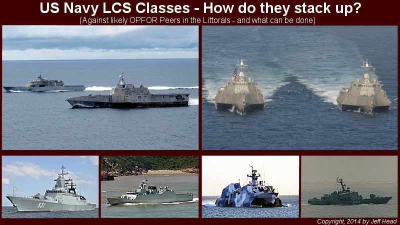

|
 |
 |
 How do the new US Navy Littoral Combat Ships (LCS) stack up against their most likely peer opponents in the Littorals? The answer to this question is something that every US Navy enthusiast, supporter, and verteran should take keen interest in.
INTRODUCTION: Both hull forms and design bring different advanatages to the fore. The Freedom is a more traditional semi-planing monohull, with a shallow draft, very high speed capabilities, and has a flight deck that is 1 1/2 times larger than the current flight deck on the much larger Arleigh Burke class destroyer. The Independence trimaren features a very narrow bow, but a very wide main body that is very stable in higher sea states, has a flight deck that is three times larger than the current Arleigh Burke destroyer landing pad, has a very large hanger, a lot of mission module space, and still maintains fast speed and a shallow draft, though not as shallow as the Freedom.
 USS Freedom, LCS 1, Steel mono-hull design  USS Independence, LCS 2, Aluminum Trimaren design After both vessesl were built and trialed, the US Navy made the unusual, and somewhat controversial decision to go with both designs so that they could get the advanatges of both vessels. Originally 56 vessles were planned...twenty eight of each, but in 2013 it was announced that this number would be cut back to a total of 32 vessels...sixteen of each. To this date (May 2014), three Freedom Class LCS have been launched:
LCS-1 USS Freedom The next two Freedom class vessels, USS Detroit (LCS-7), and USS Little Rock (LCS-9), are both building Also, three Independence Class vessels have been launched:
LCS-2 USS Independence The next two Independence class vessels, USS Montgomery (LCS-8), and USS Gabriel Giffords (LCS-10), are also both building. MODULE CONFIGURATION: The LCS requiremnt was for the vessels to be extremely modular. They were meant to replace several classes of vessels, incuding for Mine Counter Measure (MCM), various aspects of the Oliver Hazard Perry Class guided-missile frigtaes (FFG), and to perform a highly network-centric role in the Littoral spaces covering both anti-surface and anti-submarine warfare. As such, each class comes with a standard armament, and then employs modules to address each major mission as required. The standard armament consists of a high-rate of fire 57mm main gun, either a RAM or SeaRAM short range anti-aircraft missile launcher for self defense, four fifty caliber machine guns for close in defense, and the helicopter pad and hanger. The idea, in theory, is to have an Anti-Submarine Warfare (ASW) module, an Anti-Surface Warfare (ASuW) module, and an Mine Counter Measures (MCM) module to address each major mission area as needed. The plan is for the vessels to be able to return to a forward staging base and swap out modules in a single day as needed. In theory this plan seemed to make sense as small squadrons of LCS vessels could be employed to provide adequate force protection and the capabilities to conduct their mission. The type of force/capability required could be augmented by adding the necessary modules. In the Independence class case, there is actually enough internal space for the vessel to carry an extra module. However, in practice this plan has not achieved the desired results or outcomes. Anti-Surface Warfare Module Issues: These modules are not only behind schedule, they are coming in over buidget as well. In today's more austere environment, this does not bode well for a program that depends on them to be able to fulfill its specification, particularly when other nations around the world, particularly potential adversaries, are proceeding with plans of their own.
OPPOSITION VESSELS: However, more sophisticated and capable potential adversaries are developing and deploying much more capable FACs, with much longer ranged missiles, and (as is certainly the case with Russia and China) they are building corvette and light frigate sized vessels with very significant armament and sensor capabilities, and they are building them in numbers to secure and protect their own Littoral waters. The following chart compares both classes of LCS against three potential adversarial vessel classes, one Russian light firgate, a Corvette from China, and aguided-missile FAC from China, all of which are designed by these nations to operate in the Littorals...the very place where the Freedom and Independence class vessels will have to go and contend with them if called upon:

As can be seen, generally, both classes of LCS are larger, they are faster, they have a better sensor and electronic suite, but in each case they are significantly out gunned in terms of anti-surface warfare capabilities. This will remain true even if a new anti-surface missile is developed that meets the original rerquirements of the design, like the NLOSLS missile. Any of the US Navy LCS vessels, as currently designed and configured, will stand into significant harm's way, and be out matched by any of these vessels listed. In this regard, it must be remembered that the vision is for the US Navy LCS vessels to go into the littorals of the target nation and secure them. In such scenarioes, the cahnce and danger that the OPFOR vessels will be operating with air, surface, and sub-surface supports is significant. Here are pictures of each of these larger vessels for comparison:
 Russian Navy Steregushchiy Class Combatant  Chinese Navy (PLAN) Type 056 Combatant  Chinese Navy (PLAN) Type 022 FAC Many other nations also deploy corvettes with similar capabilities as those listed here. Many times this is older Russian or Soviet equipment, but in most casses those vessels will be armed with anti-surface missile systems that range anywhere from forty, to seventy to one hundred misiles or more. Can we expect our LCS vessels to contend with such vessels when their own missile range is currently on the order of six to eight miles? Of, in the case where their helicopters carry Hellfire missiles, have a range of 8-10 miles from the helicopter? Can we expect those helicopters to fly at great distance from the LCS into a anti-air engagement missile range that exceeeds the range of their Hellfire missiles? Of course, the answer to all of these questions is no...not if we expect our own forces to have a credible chance of dealing with and defeating such an adversary. In any case where a current US Navy LCS vessel were to run up against such an OPFOR vessel, the threat environment and vulnerability would be very high, with a tremdnous risk of either major damage to, or loss of the LCS. This is not acceptable.
SOLUTIONS: This author believes very strongly that the current LCS vessles, as well as their future builds, can be modified to effectively address these vulnerabilities. A short term solution and a longer term solution are necessary as realtively near term developments will help address the issue within a few years. First, in the short term (1-3 years): Add at least one quad-cannister Harpoon launcher (or two dual cannister launchers), with the necessary sensor suoite, to each LCS. The latest block Harppons have ranges well in excess of 100 milies, and are very capanble weapons that would goive each LCS the ability to defend itself and take the surface combat to any agrerssor. In addition to this, each vessel should have a full RAM launcher which carries 21 Rolling ariframe missles. This would require tha tthe SeaRAM on the current Independence class be exchanged for a full RAM system.This final measure alone would address the considerable current vulnerabilities for the LCS in surface warfare in the littorals. it would also significantly enhance their anti-air defense capabilites to better defend against any of the more modern missiles that may be launched against them. It would allow the vessels to become much more multi-role, as these new capabilities would be intrinsic to the vessel and not sacrificed by other modules. The ASW capabilities they have with their towed arrays and their ASW helicopters would be able to be conducted at the same time that they have these much stronger ASuW capabilities. Then, for the mine countermeasures role, as needed, particularly Independence class vessels could use the forward staging bases to equip themselves with this module as it is completed, and still have the very much improved anti-surface and anti-submarine protection capabilites. If a swarming threat were envisioned, then the vessels could also add the specifics for that mission module in a similar fashion, without giving up the longer ranged ASuW capabilities, or their ASW capabilities.
Jeff Head |
FINE ALL-AMERICAN, LIBERTY ORIENTED BOOKS AUTHORED BY JEFF HEAD
 Dragon's Fury - World War Against America and the West: Following great success in the War on Terror, politicians and analysts alike thought that future global conflict was impossible...but they were wrong. Journey into a possible future where Islamic terrorists sharpen their horrific skills & ally with Red China. In such a future, can the U.S. & western civilization survive? |
 The Stand at Klamatjh Falls: How rural western farmers and their supporters stood up to entrenched environmentalism, activist judges, and agencies of the Federal Government in southwestern Oregon...and prevailed. |
CLICK HERE TO GO TO:
Site Copyright © 2014 by Jeff Head, All Rights Reserved
This site is not in any manner associted with, or connected to, any political party or candidate.